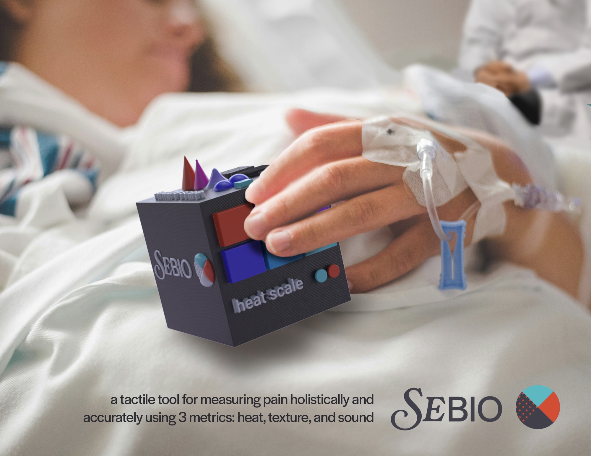
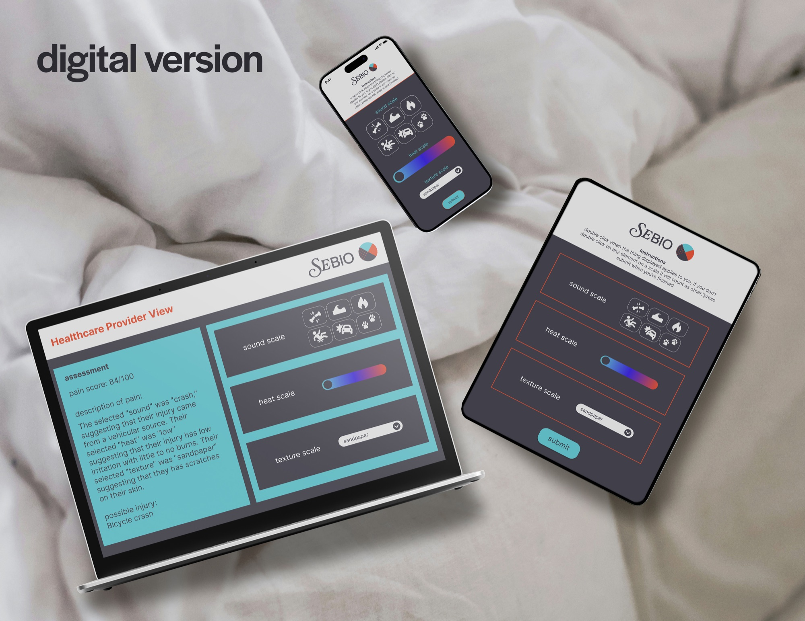
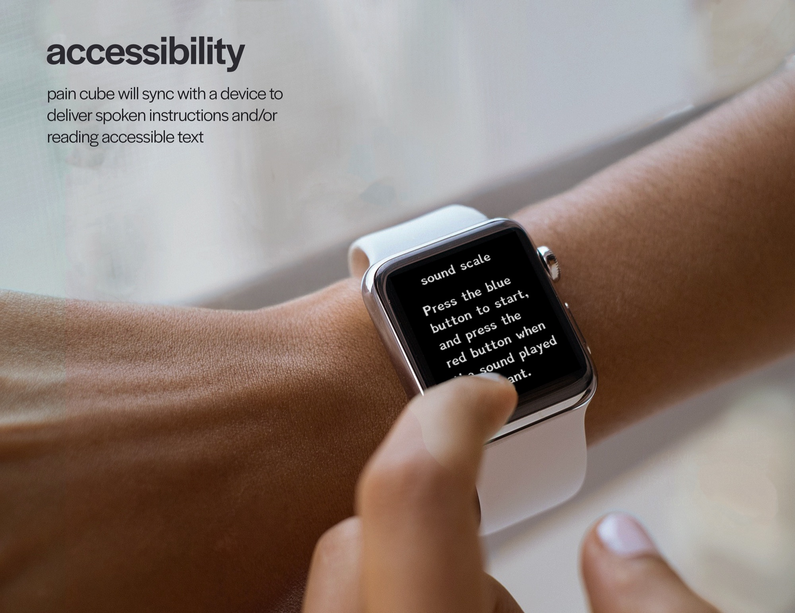
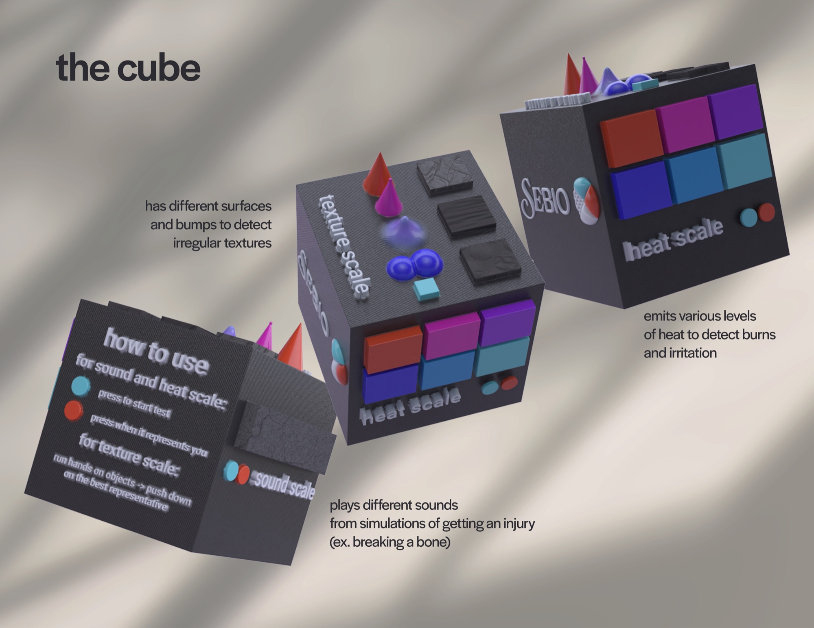
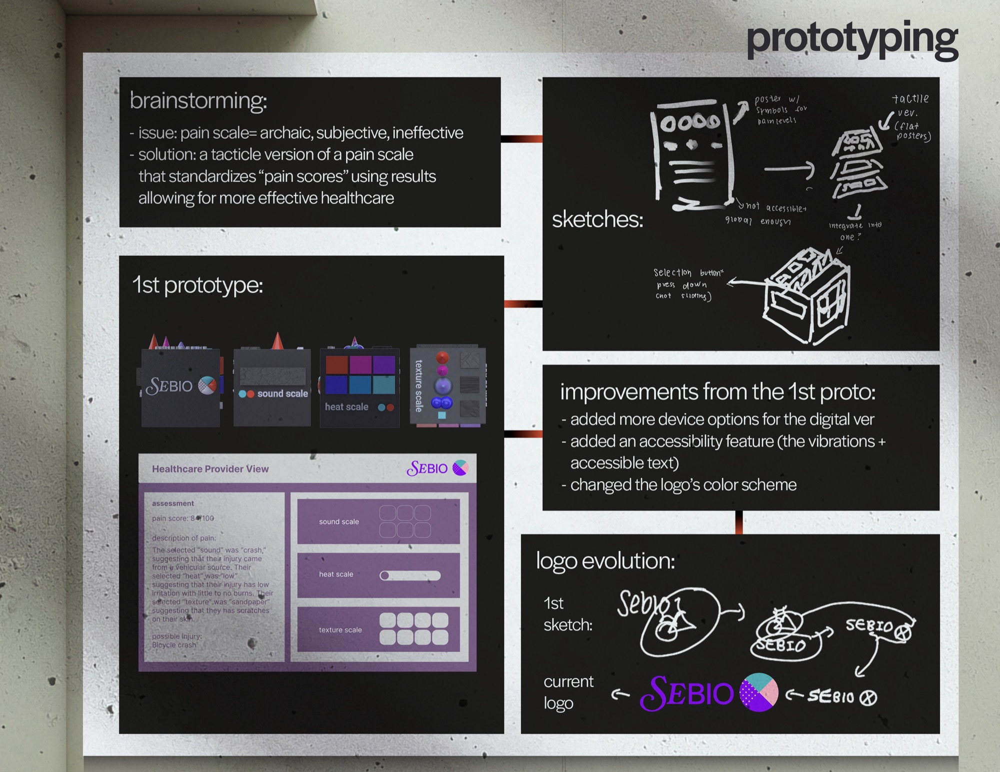

Sebio: Tactile Pain Cube — 3D Modeling, UI/UX, Branding
Software used: Blender, Figma, Adobe Illustrator, Adobe Photoshop
Sebio is a name for a series of projects I am working on, all with the goal of bringing more accessibility to health. This project features a tactile tool for measuring pain through three metrics heat (irritation, burning, stinging), texture, and sound (cause/event of injury). This tool is mainly used to help with communication between physicians and patients that might not have the ability to properly express their pain, mainly the elderly, children, and mentally incapacitated.

Process



